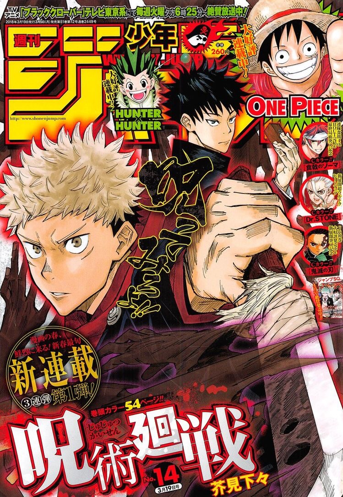
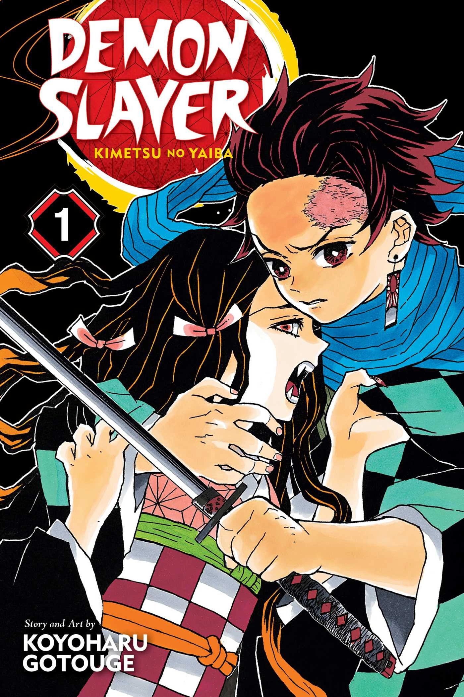
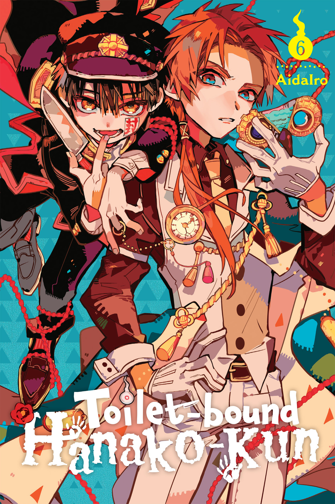
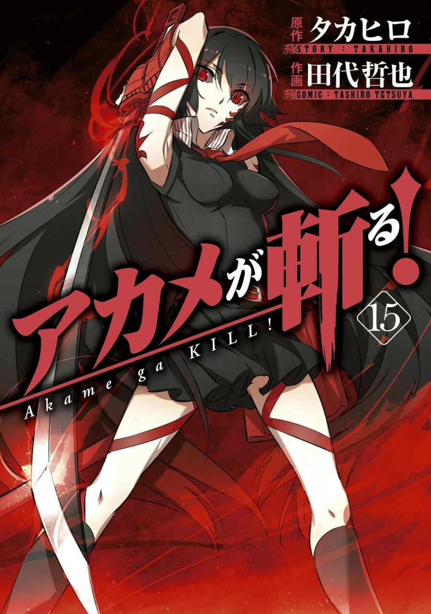
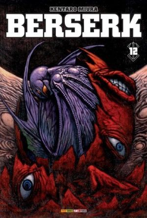
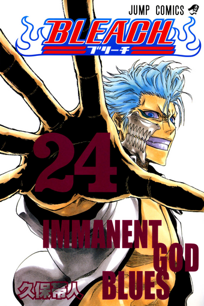
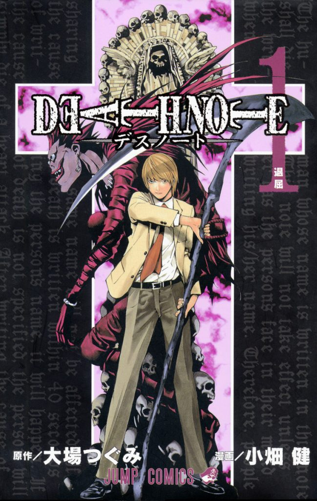
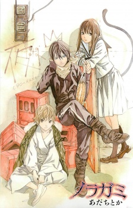
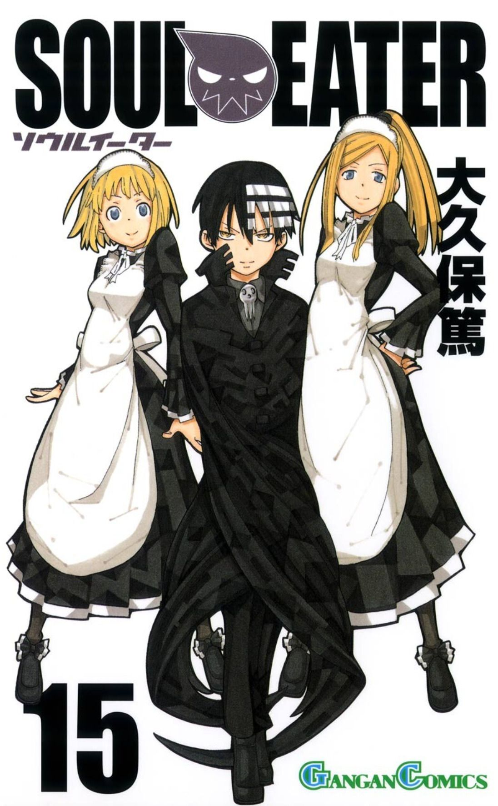

- POPÜLER MANGALAR

Jujutsu Kaisen
Yūji Itadori, Sendai'de sıradan bir okul hayatı yaşamakla birlikte çok büyük bir fiziksel güce sahip olan bir lise öğrencisidir. Bir gün, lanetlerce saldırıya uğrayan bir arkadaşını kurtarmak için İki Yüzlü Hayalet'in parmağını yer ve bu laneti kendi ruhuna alır.

Kimetsu no Yaiba
Kimetsu no Yaiba, ailesi katledildikten ve kız kardeşi Nezuko'nun iblise dönüşmesinden sonra onu kurtarmak adına arayışa çıkan ve iblis avcısı olmaya karar veren genç Tanjiro Kamado'nun maceralarını konu alan bir mangadır.

The Promised Neverland
2045 yılında geçen hikaye, Emma ve onun gibi pek çok çocuğun yaşadığı izole bir yetimhanede başlar. Buradaki çocuklar anne dedikleri bir bakıcı tarafından sevgi dolu bir şekilde yetiştirilmekte ve uygun aile bulunduğunda ise evlatlık olarak oradan gitmektedirler
My Hero Academia
Midoriya Izuku’nun hikayesini anlatan anime dizisi, dört yaşındaki. Midoriya’nın arkadaşları tarafından zorbalığa uğradıktan sonra kimsenin eşit olmadığını anlamasına ve süper güçleri olan bir kahraman olmak uğruna verdiği mücadeleleri konu alıyor.

Jibaku Shounen Hanako-kun
Eski okul binasının üçüncü katındaki kızlar tuvaletinin, üçüncü tuvalet bölmesini kendine mesken edinen Hanako-san, biri tarafından çağrıldığında çağıran kişinin herhangi bir dileğini yerine getirmektedir.





